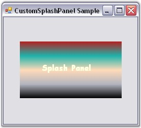

This section discusses how a SplashPanel control can be displayed as a SplashScreen for the SplashControl.
The SplashControl allows the user to display a SplashPanel control as the splash screen. The following settings can be changed to customize the SplashPanel in the SplashControl.
|
SplashControl Property |
Description |
|
SplashControlPanel |
Gets / sets the internal SplashPanel that is displayed as the splash screen. |
|
ShowInTaskBar |
Indicates if the SplashPanel is to be shown in the taskbar. |
|
FormIcon |
Gets / sets the icon for the SplashPanel. |
|
[C#]
this.splashControl1.ShowInTaskbar = true; this.splashControl1.FormIcon = ((System.Drawing.Icon)(resources.GetObject("splashControl1.FormIcon"))); |
|
[VB.NET]
Me.splashControl1.ShowInTaskbar = True Me.splashControl1.FormIcon = DirectCast((resources.GetObject("splashControl1.FormIcon")), System.Drawing.Icon) |
Figure 985: SplashPanel displayed in the TaskBar
See Also
How can I access the default panel of a SplashControl?
A SplashControl allows the user to add an image that is to be displayed in the splash screen. However, the SplashControl also allows the user to add a SplashPanel control which can be customized by the user.
1. Add the required Syncfusion.Windows.Forms.Tools and Syncfusion.Shared.Base assemblies.
2. Drag and drop a SplashControl form the toolbox onto the form. The SplashControl will be created in the components area of the form.
3. Drag and drop a SplashPanel control from the toolbox.
4. Design the SplashPanel with the required controls (You can add any user interface control to the SplashPanel).
5. Populate the SplashPanel with the SplashControl using the CustomSplashPanel property.
6. The SplashControl uses the SplashPanel only if the UseCustomSplashPanel property is set to 'True'.
Create a SplashControl and add the below code to the form to customize the SplashPanel and display the SplashPanel as the splash image.
|
[C#]
// Add the required namespace. using Syncfusion.Windows.Forms.Tools;
// Declaration of controls. private Syncfusion.Windows.Forms.Tools.SplashControl splashControl1; private Syncfusion.Windows.Forms.Tools.SplashPanel splashPanel1; private System.Windows.Forms.Label label1;
// Initialization of controls. this.splashControl1 = new Syncfusion.Windows.Forms.Tools.SplashControl(); this.splashPanel1 = new Syncfusion.Windows.Forms.Tools.SplashPanel(); this.label1 = new System.Windows.Forms.Label(); this.splashPanel1.SuspendLayout();
// Setting the properties for the SplashControl. this.splashControl1.CustomSplashPanel = this.splashPanel1; this.splashControl1.UseCustomSplashPanel = true;
// Setting the properties for the SplashPanel. this.splashPanel1.AnimationSpeed = 10; this.splashPanel1.BackgroundColor = new Syncfusion.Drawing.BrushInfo(Syncfusion.Drawing.GradientStyle.Vertical, new System.Drawing.Color[] {System.Drawing.SystemColors.HighlightText,System.Drawing.SystemColors.Highlight, System.Drawing.Color.PeachPuff, System.Drawing.Color.LightSeaGreen, System.Drawing.Color.Firebrick});
// Add label this.splashPanel1.Controls.Add(this.label1); this.splashPanel1.DesktopAlignment = Syncfusion.Windows.Forms.Tools.SplashAlignment.Center; this.splashPanel1.DiscreetLocation = new System.Drawing.Point(0, 0); this.splashPanel1.Font = new System.Drawing.Font("Comic Sans MS", 12F, System.Drawing.FontStyle.Bold, System.Drawing.GraphicsUnit.Point, ((System.Byte)(0))); this.splashPanel1.ForeColor = System.Drawing.SystemColors.Info; this.splashPanel1.Location = new System.Drawing.Point(32, 48); this.splashPanel1.Name = "splashPanel1"; this.splashPanel1.ShowAnimation = true; this.splashPanel1.Size = new System.Drawing.Size(200, 112); this.splashPanel1.SuspendAutoCloseWhenMouseOver = false; this.splashPanel1.TabIndex = 0; this.splashPanel1.Text = "splashPanel1"; this.splashPanel1.TimerInterval = 5000;
// Setting the properties for the label. this.label1.BackColor = System.Drawing.Color.Transparent; this.label1.Location = new System.Drawing.Point(40, 40); this.label1.Name = "label1"; this.label1.Size = new System.Drawing.Size(136, 23); this.label1.TabIndex = 0; this.label1.Text = "Splash Panel";
// Add the SplashPanel to the SplashControl. this.Controls.Add(this.splashPanel1); |
|
[VB.NET]
' Add the required namespace. Imports Syncfusion.Windows.Forms.Tools
' Declaration of controls. Private splashControl1 As Syncfusion.Windows.Forms.Tools.SplashControl Private splashPanel1 As Syncfusion.Windows.Forms.Tools.SplashPanel Private label1 As System.Windows.Forms.Label
' Initialization of controls. Me.splashControl1 = New Syncfusion.Windows.Forms.Tools.SplashControl() Me.SplashPanel1 = New Syncfusion.Windows.Forms.Tools.SplashPanel Me.label1 = New System.Windows.Forms.Label Me.SplashPanel1.SuspendLayout()
' Setting the properties for the SplashControl. Me.SplashControl1.CustomSplashPanel = Me.SplashPanel1 Me.SplashControl1.UseCustomSplashPanel = True
' Setting the properties for the SplashPanel. Me.SplashPanel1.AnimationSpeed = 10 Me.splashPanel1.BackgroundColor = New Syncfusion.Drawing.BrushInfo(Syncfusion.Drawing.GradientStyle.Vertical, New System.Drawing.Color() {System.Drawing.SystemColors.HighlightText, System.Drawing.SystemColors.Highlight, System.Drawing.Color.PeachPuff, System.Drawing.Color.LightSeaGreen, System.Drawing.Color.Firebrick}) ' Add label Me.SplashPanel1.Controls.Add(Me.SplashPanel2) Me.SplashPanel1.DesktopAlignment = Syncfusion.Windows.Forms.Tools.SplashAlignment.Center Me.SplashPanel1.DiscreetLocation = New System.Drawing.Point(0, 0) Me.splashPanel1.Font = New System.Drawing.Font("Comic Sans MS", 12F, System.Drawing.FontStyle.Bold, System.Drawing.GraphicsUnit.Point, CByte((0))) Me.SplashPanel1.ForeColor = System.Drawing.SystemColors.Info Me.SplashPanel1.Location = New System.Drawing.Point(72, 64) Me.SplashPanel1.Name = "SplashPanel1" Me.SplashPanel1.ShowAnimation = True Me.SplashPanel1.SuspendAutoCloseWhenMouseOver = False Me.SplashPanel1.TabIndex = 0 Me.SplashPanel1.Text = "SplashPanel1" Me.SplashPanel1.TimerInterval = 5000
' Setting the properties for the label. Me.label1.BackColor = System.Drawing.Color.Transparent Me.label1.Location = New System.Drawing.Point(40, 40) Me.label1.Name = "label1" Me.label1.Size = New System.Drawing.Size(136, 23) Me.label1.TabIndex = 0 Me.label1.Text = "Splash Panel"
' Add the SplashPanel to the SplashControl. Me.Controls.Add(Me.SplashPanel1) |

Figure 986: Customized SplashPanel displayed as Splash Screen